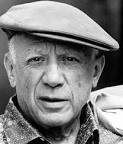
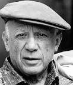

Il celeberrimo quadro di Pablo Picasso fa parte del periodo del “cubismo sintetico” dell’artista, realizzato in memoria del bombardamento della città basca di Guernica che colpì la popolazione civile (26 aprile 1937) nel corso della Guerra civile spagnola. La grande tela fu commissionata a Picasso dal Governo Repubblicano per esporla nel Padiglione spagnolo dell’Esposizione universale di Parigi. Guernica fu presto popolarissima in tutto il mondo, divenendo non solo un simbolo della Guerra civile in Spagna ma una protesta cono la violenza tutte le guerre in generale. Il senso del dramma è reso dall’uso di bianchi, neri e grigi, dalla deformazione dei corpi, dalle linee spezzate e dai gesti disperati delle figure.